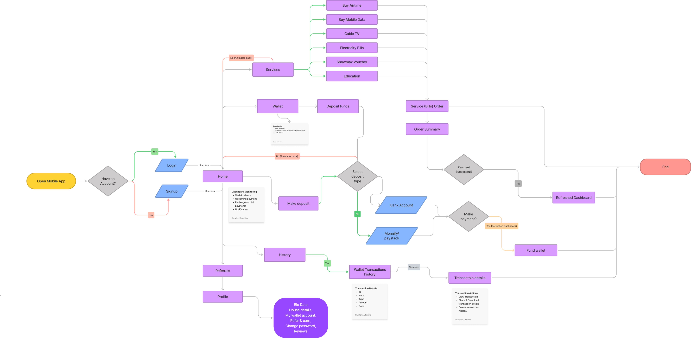

This is a Utility bill payment company that provides users with faster and cheaper means of purchasing Data Top-up, Airtime Top-up, Electricity bill, Cable subscription.

Research, wireframes, prototypes, UI Design, User flows, UI/UX Designer
Andriod & iOS
3rd April, 2022 to 21st April, 2022
Utility bills payment
Project Overview
User’s usually have the challegne of purchasing bills, Lordtech Bills is an online platform that enables it’s users to interactively and easily pay bills, purchase aitime and other utility bills.
Through this concept of challenge-based learning, a closer integration of society and school as well as a stronger awareness of the student‘s responsibility and ability to act is achieved.
My role is to design a usable product for users to effectively pay and manage utility Bill.I conducted user interviews, user research survey, information architecture, and digital wireframes, low and high fedelity protoytying, conducting usability studies, iterating on designs, defining UX metrices, defining busniess KPI.

Figma

Google Forms

Figjam

Google sheets

Whatsapp Video call

After Effects

Adobe Encoder
Validation
The users find it difficult to manage their bills and exiting platforms for bills payments made it difficult for users to navigate through the app, and users couldn’t schedule bills, they had to repeat similar bills frquenctly.
Project Vision / Goal Statement.
Our bill payment app will let users easily purchase and manage utility bills which will affect how users process & manage their utility bills, by giving them the ability to track, and schdule utility bills. We will measure effectiveness by analizing the number of utility bills been processed.
To complete the project, I conducted survey with users to discover the problems expereinces, needs that the user faces from the begining to the end their process.
80%
participants pay their utility bills monthly, while 20% pay theirs weekly.

100%
participants use their mobile devices to pay utility bills
40%
of participants find it difficult navigating utility bills payment applications
30%
30% of people found it difficult to access the various feature of exiting platforms.
90%
90% of people prefer using their banking app for utility bills payment.
50%
50% of people experience network problems while trying to purchase a utility bill.
Project research
I conducted interviews and created empathy maps to understand the users I’m designing for and their needs. A primary user group identified through research was working students & adults who had difficulty purchasing, tracking and scheduling utility bills. This user group confirmed initial assumptions about LBs Tech customers, but research also revealed that they’ll love to get notified when a utility bill is about to expire or renewed.
I learned alot about problems during thr research and found that users have similar behavoius and pain poinsts. Organizing everything helped me narrow it down to some points, from which I creaete a list of features that can help users.
Scheduling Bills
need an utility bills app that can provide them with a scheduling feature, to schedule utility bills that they use regularly and not get to keep repeating the same payment process severals times.
Complex Navigation
People will not engage with anything hard to use or understand. Simplicity is one thing, but portraying value-added functionality while retaining simplicity is the main challenge. Here I used the easy navigation, menu bars to increase the engagement with the lordtech bill app.
Bad visual design
People need an app that is visually appealing, as it passed a sence of trust and calmness.
Accessibility
Platforms for purchasing utility bills are not equipped with assistive technologies.
No support
Platforms for purchasing utility bills lack any form of support system for users when an isssue is bieng face by users.
Create Personas helps to understand who is a product’s users, what their goals and frustrations, and for what purpose they will use the product. The result should be believable people with their own experince and values.
Discover
After conducting surveys, compling user personas, defining target users, analyzing the responses, I developed insights that help me determine what features should be in a mobile, web app.
People need an app that can immediately provide them with a schdulling feature so they don’t repeat regular tasks & get reminders on the app.
People need an app that they can easily navigate from one feature to the other, without checking the internet on how to perform tasks on the app.
People need an app that can immediately provide them with online support when they exeperince any diffculty or issuse while purchasing utility bills.
People need an app that can immediately provide them easy access to services bills without experinceing payment issues. Using the wallet system help users keep month in their wallet for easy access.
This process was done to define the target audience with more clarity, as well as as illustrate their needs and actions. Empathy mapping helped me gain me gain perspertive on their thoughts and feelings.
Persona: Dele Adebayo
Goal: Purchase & schdule a utility bill
Mapping Dele’s user journey revealed how helpful it would be for users to have purchase, track and scheduled utility bills on the LBs Tech app.
After collecting all the data and information from users through research and extracting esstial information, I can draw this user flow diagram after sevel iterations that show the entire path that the user takes when using the product. Finnally, I create the most convinect navigation structure.
Lo-fi Wireframe
By creating user flow, it helps us deliver a great product experince. We made tens of wireframes to lay out layout content and functionality on a page which takes into account user needs and user journeys.
Easy navigation was a key user need to address in the designs in addition to equipping the app to work with assistive technologies.
Easy navigation was a key user need to address in the designs in addition to equipping the app to work with assistive technologies.
Test Phase
I conducted two rounds of usability studies. Findings from the first study helped guide the designs from wireframes to mockups. The second study used a high-fidelity prototype and revealed what aspects of the mockups needed refining.
Users want to login to the appp quickly.
Users want more login options.
Users want to be able to make withdrawals.
Users were unfamilair and confused with the “port number” term.
Users want a better navigation menu.
Users expressed their sucureity concerns towards their the use of their apple and google authenticantion.
Design Iteration
The suggestions from the usability testing were considered and the following changes were made.
Early designs had only one method of registration, but after the first usability study, I added two (2) additional options to Login to the app to simplify the sign & sign up process for users however, due to sucurity conderns from participants I had to refactor the signin screen to use the biometric login as an alternative which users feel confortable with.
Early designs had didn’t make provision for users to make withdrawals with users found tricky, so I added the withdraw button to aid uses make withdrawals from their wallet.
The second usability study revealed frustration with the purchase utility service flow. To address the issue, I refactored the screen by removing the “Port number”, since it was less significant.
Final Design
By creating user flow, it helps us deliver a great product experince. We made tens of wireframes to lay out layout content and functionality on a page which takes into account user needs and user journeys.
Final Design
By creating user flow, it helps us deliver a great product experince. We made tens of wireframes to lay out layout content and functionality on a page which takes into account user needs and user journeys..
A11y Guidlines
By creating user flow, it helps us deliver a great product experince. We made tens of wireframes to lay out layout content and functionality on a page which takes into account user needs and user journeys.
Scheduling Bills
Used icons to help make navigation easier.
Iconography
Used icons to help make navigation easier.
Complex Navigation
Used detailed imagery for each utility bill service to help all users better understand the designs.
Test Phase
After the implementing feedback from the usability test, the project assessts where handled over to the devloper to concernce the development of the application, and after the development. The project was launched. Also, to effectively manage the product, I proposed some UX metrices and Business KPIs to track to help understand users activities on the mobile application and how it affects the business.
UX metrices
After the implementing feedback from the usability test, the project assessts where handled over to the devloper to concernce the development of the application, and after the development.
🎯 Daily active users (DAU)
🎯 Net promter score (NPS)
🎯 Unique Users (UU)
Busness KPIs to measure
After the implementing feedback from the usability test, the project assessts where handled over to the devloper to concernce the development of the application, and after the development.
🎯Average Revenue per User (ARPU)
🎯Customer Retention Rate (CRR)
🎯Cost of customer aquicition (COCA)
🎯Burn Rate (BR)